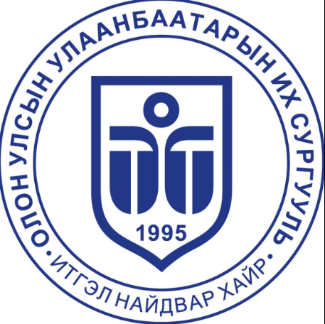
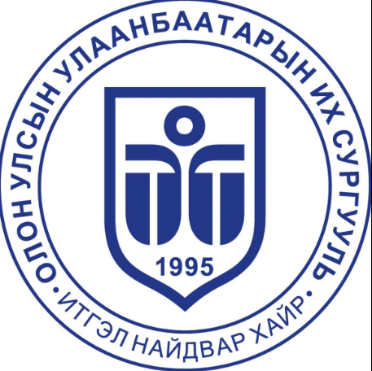

БНСУ-ын хөрөнгө оруулалттай их сургууль 1995 онд “Улаанбаатар коллеж” байгуулагдаж, 2002 онд “Улаанбаатар дээд сургууль”, 2012 онд “Улаанбаатар их сургууль”, 2015 онд “Олон Улсын Улаанбаатарын Их Сургууль” болон өргөжиж дээд боловсролын салбарын тэргүүлэх их сургуулиудын тоонд багтаж чадлаа. Хууль зүйн сургууль, Сувилахуй сургууль, Хүмүүнлэг, Нийгмийн ухааны сургууль, Инженер, дизайн, технологийн сургууль, Эдийн засаг, Бизнесийн сургууль, Суурь боловсролын салбар гэсэн 6 бүрэлдэхүүн сургууль, салбарын 14 тэнхимд 28 мэргэжлээр бакалаврын, Төгсөлтийн дараах сургуульдаа 14 чиглэлээр магистрын, 2 чиглэлээр докторын түвшиний сургалтыг явуулдаг сургалт, судалгааны их сургууль болоод байна. Тус сургуульд эрдмийн зэрэг цолтой гадаад, дотоодын 100-аад профессор багш мянга мянган залуусын хүсэл мөрөөдлийг биелүүлэхээр ажиллаж байна. 2025 онд тус сургууль байгуулагдсаны 30 жилийн ой болно. “Дэлхийд гарах гарц” уриатайгаар монгол оюутан, залууст олон улсын түвшний боловсрол эзэмшүүлж цэнхэр дэлхийд дүүлэн нисэх эрдмийн жигүүрийг бид ургуулна.